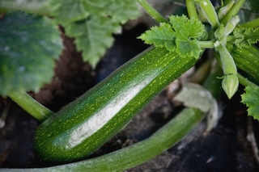
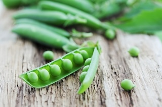

Produzione 2019
Zucchine

Coltivare in terreno molto ricco di mteria organca e non coltivare dopo Solanacee o piante della stessa famiglia delle cucurbitacee
-
Varietà:
Zucchina chiara di Faenza
-
Periodo delle Semina:
Marzo/Aprile
-
Primo raccolto:
Fine Aprile
-
Ultimo raccolto:
Fine Luglio
-
Raccolto:
| Dimensione | Quantità |
| Piccole (10cm) | 16 |
| Medie (11-16cm) | 26 |
| Grandi (>16cm) | 9 |
| 51 |
-->Acquista Semi<--
Piselli

American Wonder:
Varietà media precoce come ciclo culturale
Consigli
-
Piantare in semenzaio riscaldato.
E'importante:
-
Acquistare vasetti biodegradabili (di cocco o cartone)
-
Mantenere areato il semezaio per evitare muffe
-
Non usareil coperchio del semenzaio
-
Non usare mettere il semezaio vicino al termosifone
-
Fissare i sostegni nel terreno non appena le piantine raggiungono i 10 cm
-
Acquistare una rete con spazi di non più di 10 cm per garantire sostegni adeguati
-->Acquista Semi<--